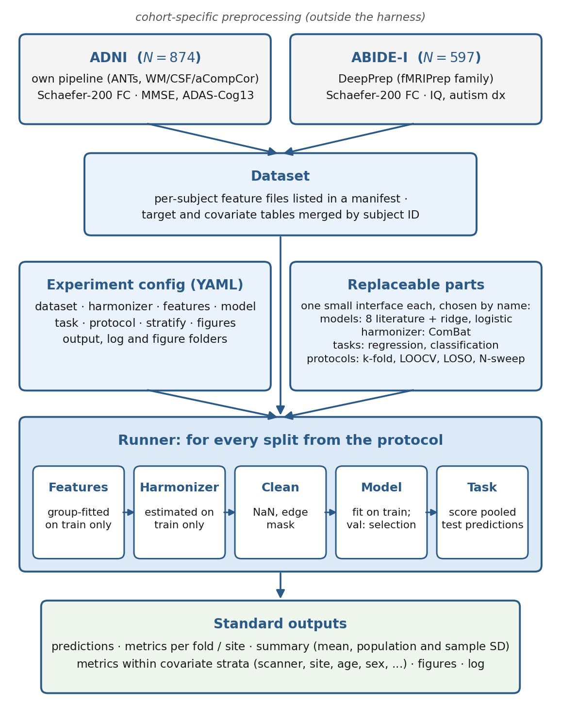

mm-neuro
A small, configuration-driven evaluation harness for predicting phenotypes from neuroimaging. One YAML file describes an experiment, and the runner makes sure nothing from the test subjects leaks into training.
Why it exists
Reproducibility checks in neuroimaging are usually one-off scripts that re-implement cross-validation, site harmonisation, confidence intervals and reporting each time, and small differences between them make results hard to compare. mm-neuro packages that work once, so the same evaluation can be pointed at a new cohort, target, model or preprocessing pipeline by editing a configuration file. It was built for the connectivity benchmark and is being extended to other neuroimaging projects.
How it works

An experiment configuration
Changing the cohort, model or protocol is a one-line edit. Replacing the protocol with
{type: loso, group_column: site}, for example, turns a k-fold run into leave-one-site-out.
dataset: {file: configs/datasets/adni_full.yaml}
harmonizer: {type: combat, batch_column: tr, batch_rule: tr_group, protected: [diagnosis]}
features: []
model: {type: cpm, p_thresh: 0.01}
task: {type: regression, targets: [mmse_mmscore, adas_total13]}
protocol: {type: kfold, splits: "splits/split_cv_fold{fold}.csv"}
stats: [bootstrap_ci]
figures: [group_metrics, pred_vs_true]
output_dir: work_dirs/cpm_adni_kfoldComponents
| Part | Available |
|---|---|
| Dataset | Manifest of per-subject feature files with target and covariate tables |
| Harmonizer | None, ComBat (fitted per training split) |
| Model | CPM, PLSR, SVR, group-ICA regression, graph curvature, ridge, logistic regression, neural models, including faithful variants of published methods |
| Task | Regression, classification |
| Protocol | k-fold with versioned split files, leave-one-out, leave-one-site-out, sample-size curves |
| Statistics | Bootstrap confidence intervals, permutation tests on pooled predictions |
| Reporting | Metrics per fold or site, within covariate strata (scanner, site, age, sex), standard figures |
Adding a new part means writing one small class and registering it by name.
Using it
pip install --no-deps --no-build-isolation -e .
mm-neuro list # every registered part, figure and statistic
mm-neuro check configs/examples/adni_cpm_kfold_stratified.yaml
mm-neuro run configs/examples/adni_cpm_kfold_stratified.yaml- Every run writes its configuration, every test prediction, per-fold metrics, a summary with the code version, a log and the configured figures.
- Built-in checks: unit tests confirm that no harmonizer or group-level feature ever sees a test subject, and a reference script reruns the benchmark's numbers after any change to the core.
Citation
@software{bhat_mmneuro_2026,
author = {Bhat, Sheethal},
title = {mm-neuro},
year = {2026},
url = {https://github.com/sheethalb/mmneuro}
}A paper describing mm-neuro is in preparation.